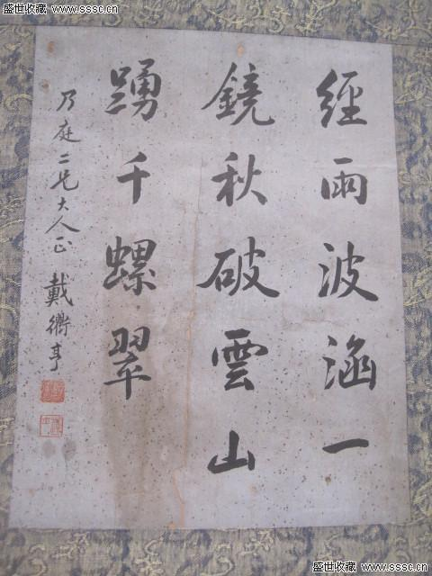
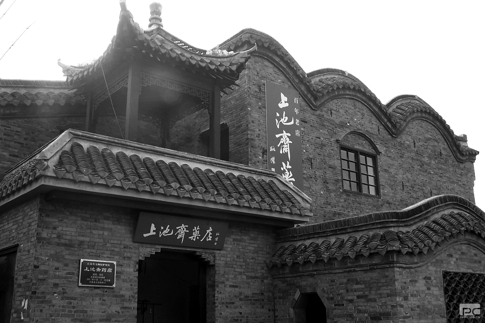

-

南山广化寺：莆阳进士之都
千年古刹广化寺，以其秀美的环境，恢宏的殿堂，与深厚的文化，成为广大游人心仪的游览胜地。笔者亦常徜徉流连其中，潜心探寻品味其广博而深厚的文化积淀。
-

宋代莆田的科甲风流 每39名进士中就有一位莆田人
宋代在中国科举制度史上有十分重要的地位。宋太祖创立的殿试制度，使分级考试逐层选拔臻于完备。宋神宗熙宁四年（1071），王安石改革贡举后，进士科成为科举中唯一的科目，不但为同时代的辽、金所仿效，而且为后来的元...
-

灵川镇径里村发现状元戴衢亨撰墓志铭
径里村后壁兜一户陈姓人家保存着一块状元戴衢亨撰写墓志铭。据说这是陈家主人1968年冬在径里水库附近捕鱼时捡到的。当时见这石上字迹齐整，觉得好看就带回家中。经村主任指引，我们随城厢区文化采风团一行一同前往探寻...
-

蔡京与朱熹
蔡京是熙宁三年（1070）进士，朱熹是绍兴十八年（1148）进士，二者相隔78年。朱熹是宋朝后期著名的理学家，著有《四书集注》等。但是，他却对宋朝历史一团漆黑，黎...
-

宋代莆田的科举
科举制度是朝廷开设科目，士人可以自由报考，主要以考试成绩决定取舍的一种选官制度。它始创于隋，确立于唐，完善于宋，而延续至元、明、清，先后经历1300年之久。宋代在中国科举制度史上有...
-

流落乡间的光绪年间兴化府城砖
刻有“塘头兴化府城砖（光绪十一年）”字样的城砖华亭镇后角村厝尾一陈姓村民家中现存6块兴化府城砖，保存基本完整。这些砖共有两种：一种砖上刻有烧制地点、年代和用途。...